Máquinas Lux para el cuidado de tu hogar y tu negocio en Quito. Conoce cada equipo, sus beneficios y detalles técnicos — para precio y disponibilidad, escríbenos directo.
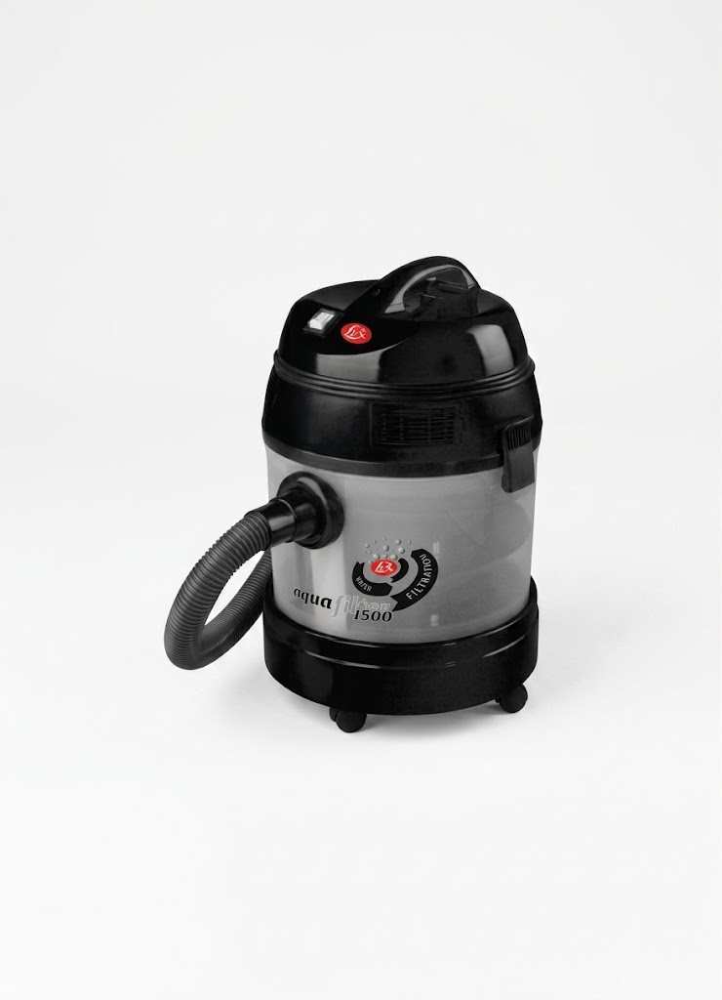
Aqua Filter 1500 Black
| Modelo | Aqua Filter 1500 Black |
| Marca | Lux |
| Procedencia | Europea |
| Potencia del motor | Nominal 1200 - Máx. 1400 |
| Flujo de aire | 32 l/s |
| Longitud del cable | 6 m |
| Capacidad del contenedor | 20 l |
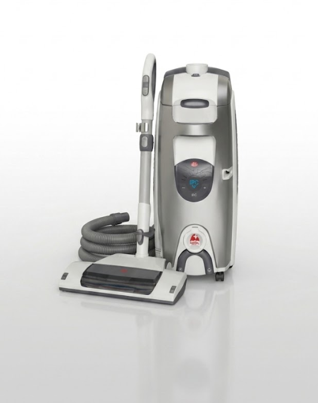
Sistema de Salud y limpieza profunda — Lux S115
El sistema de salud y limpieza Lux S115 combina alto rendimiento y facilidad de uso, con eficiencia energética y el mejor sistema de filtrado del mercado. Es especialmente adecuado para personas que padecen de alergias y asma.
| Modelo | Lux S115 |
| Marca | Lux |
| Procedencia | Europea |
| Potencia del motor | Nominal 1850W - Máx. 1000W |
| Voltaje | 110 V |
| Longitud del cable | 9 m |
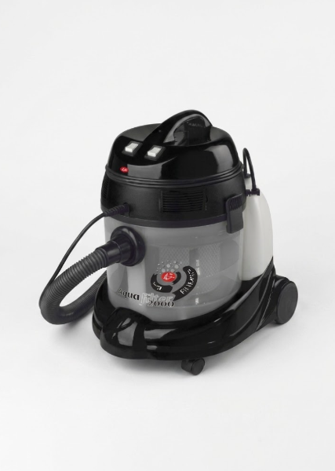
Sistema de Salud y limpieza profunda — Aqua Filter 2000 Black
| Modelo | Aqua Filter 2000 Black |
| Marca | Lux |
| Procedencia | Europea |
| Potencia del motor | Nominal 1200 - Máx. 1450 |
| Flujo de aire | 32 l/s |
| Longitud del cable | 6 m |
| Potencia de la bomba | 48 W |
| Capacidad del contenedor | 20 l |
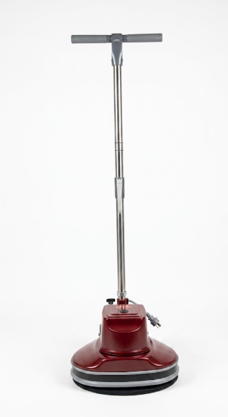
Abrillantadora — Modelo B-15
| Modelo | B-15 |
| Marca | Lux |
| Procedencia | Europea |
| Revoluciones | 1100 R/Pm |
| Longitud del cable | 6 mts |
| Voltaje | 110 V |
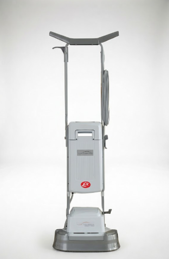
Brilladora — Lavadora de Alfombras B-100
| Modelo | B-100 |
| Marca | Lux |
| Procedencia | USA |
| Potencia | 450 W |
| Longitud del cable | 12 mts |
| Voltaje | 110 V |
| Capacidad del tanque | 3.4 lt |
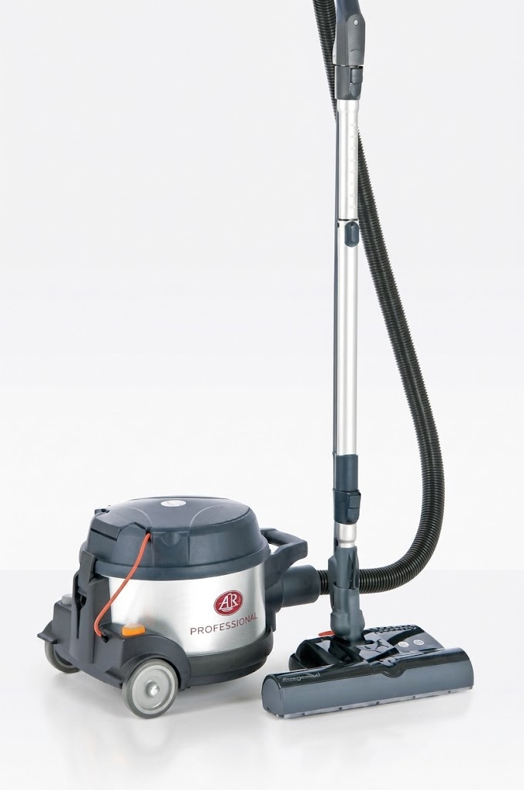
Aspiradora Profesional — PowerProf
PowerProf es un aspirador sumamente potente y de tamaño reducido, pensado para aplicaciones profesionales de altas exigencias. Asegura un alto nivel de aspiración constante con un nivel de ruido sumamente bajo, gracias a su motor industrial, manguera cónica, tubo telescópico, boquilla automática y sistema de filtrado de 3 niveles.
| Modelo | PowerProf |
| Marca | Lux |
| Procedencia | Europea |
| Potencia | 1200 W |
| Aspiración | 2400 mm. C.A. |
| Nivel de ruido | 66 DB (A) |
| Peso | 7,5 Kg |
| Longitud de cable | 15 m |
| Flujo de aire | 35 l/s |
| Poder de succión | 220 W |
| Volumen de bolsa | 15 l |
| Diámetro de manguera | 32 mm |
Brilladora — Lavadora de Alfombras B-100
| Modelo | B-100 |
| Marca | Lux |
| Procedencia | USA |
| Potencia | 450 W |
| Longitud del cable | 12 mts |
| Voltaje | 110 V |
| Capacidad del tanque | 3.4 lt |
Disponible en 3 tamaños de cepillo
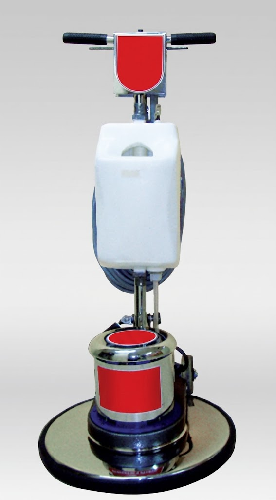
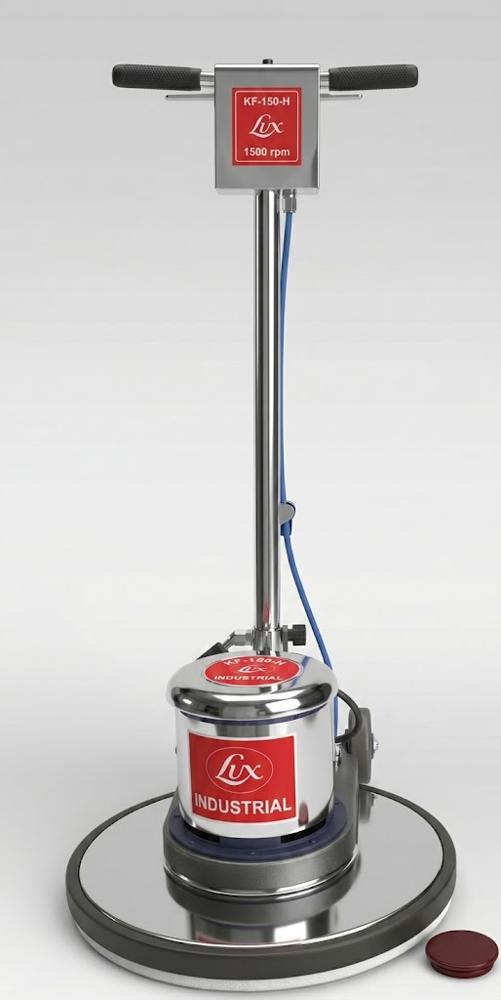
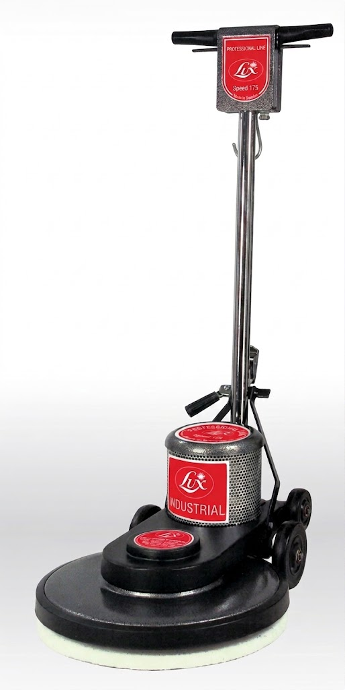
| Brilladoras — Industriales | [Modelo] 13" | [Modelo] 17" | [Modelo] 20" |
|---|---|---|---|
| Potencia motor | 1.0 / 1.5 H.P | 1.5 H.P | 1.5 H.P |
| Velocidad RPM | 175 | 175 | 175 |
| Diámetro cepillo | 13" | 17" | 20" |
| Longitud del cable | 15 metros | 15 metros | 15 metros |
| Peso general | 73 lbs | 103 lbs | 112 lbs |
| Transmisión | Piñones de acero — Triple planetario | ||
| Chasis | Aluminio brillante / cromo 1.5 pulgadas | ||
| Accesorios opcionales | Tanque para champoo / cepillos pisos duros-suaves / bonnet pad / químicos especiales | ||
Disponible en 4 capacidades de tanque
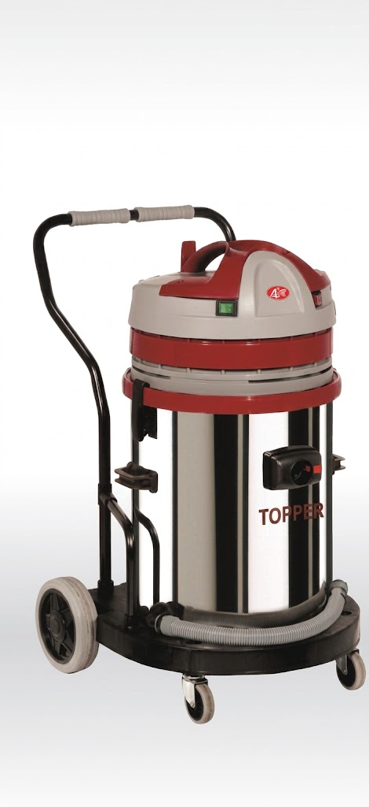
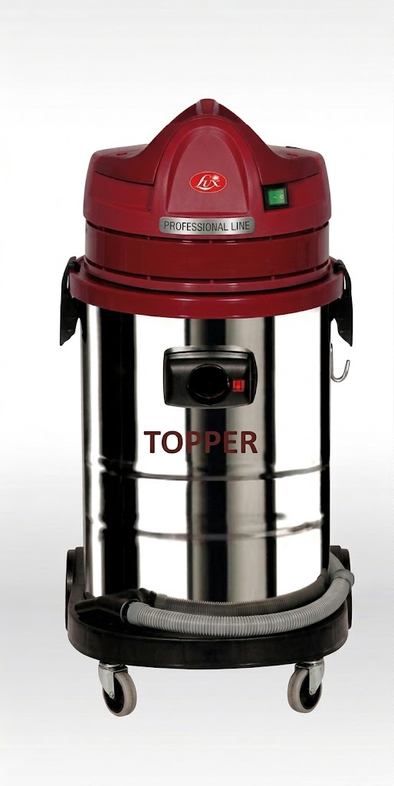
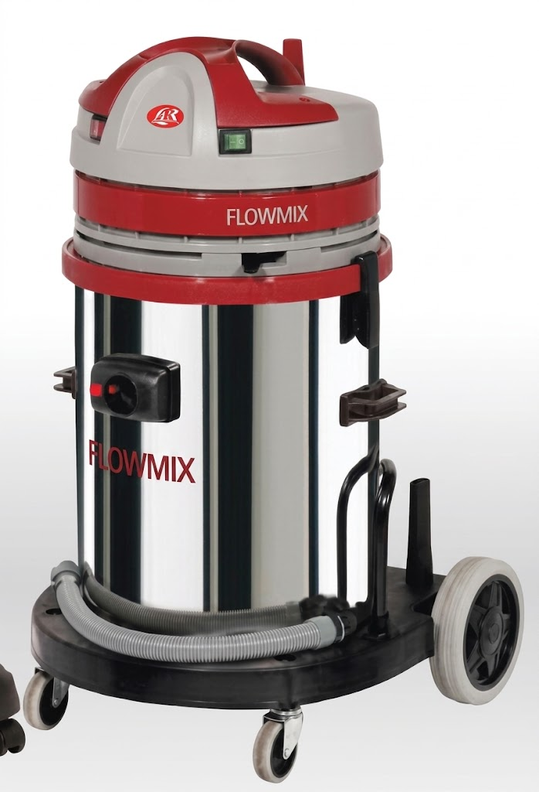
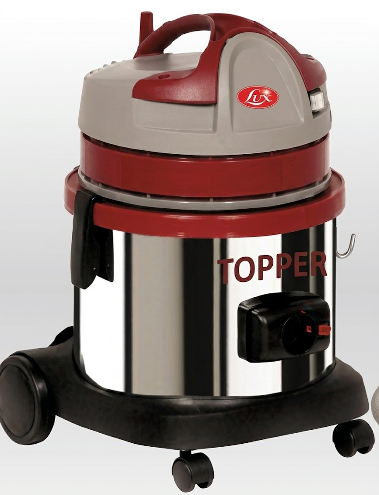
| Aspiradoras — Industriales | Topper Inox 62 | Topper Inox 41 | Topper Inox 33 | Topper Inox 17 |
|---|---|---|---|---|
| Potencia motor | 1300 W máx. — 2 motores | 1300 W máx. — 1 motor | 1300 W máx. — 1 motor | 1300 W máx. — 1 motor |
| Voltaje | 110-120 | 110-120 | 110-120 | 110-120 |
| Succión col. agua | 2380 mm | 2380 mm | 2380 mm | 2380 mm |
| Capacidad del tanque | 62 lts | 41 lts | 33 lts | 17 lts |
| Material | Tanque: acero inoxidable — Cabezal: polipropileno | |||
| Fluido de aire | 600 m³/h | 200 m³/h | 200 m³/h | 200 m³/h |
| Longitud del cable | 8 metros | 8 metros | 8 metros | 8 metros |
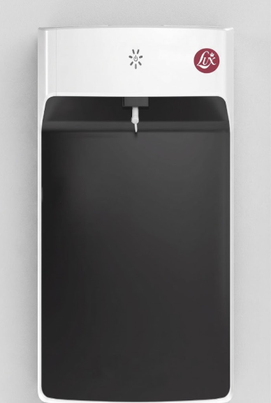
Purificador de Agua Lux — Vitality Plus
"Vive con más vitalidad, bebe agua pura"
* Ficha técnica detallada (voltaje, consumo, dimensiones) próximamente.
Cuéntanos qué modelo te interesó y con gusto te asesoramos con precios, disponibilidad y garantía.
Escribir por WhatsAppAgenda una cita para una inspección técnica sin costo. Cuida tus productos Lux y prolonga su vida útil.
LlámanosAutopista Gral. Rumiñahui e Isla Baltra — Sangolquí